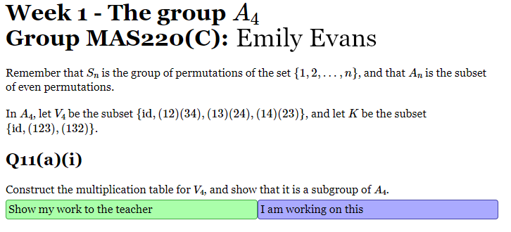

SoMaS staff and postgraduates can log in using their usual university user names and passwords. The system knows all the modules and tutorial groups, and which staff members are responsible for which groups. If you log in at a time when there is a session running that you are supposed to be attending, then you will automatically be taken to that session. This also works up to 10 minutes before the beginning of the tutorial. At other times, you will see a list of future sessions that you are supposed to be attending.
Students can also log in at the same URL, but that is not recommended. For each Sangaku session there is a specific URL like https ://aim.shef.ac.uk/sangaku/1234, which can be found as explained below. Students are expected to log in to Blackboard Collaborate first, and you can share the specific URL in the Blackboard Collaborate chat; this will avoid confusion between different tutorial groups. You should remember, however, that students cannot see chat messages that were posted before they logged in, so you should share the URL several times.
If a student logs in to a session while it is running, they will see something like this. 
If they hover over "I am working on this", they will see a menu of options:
If they choose an option that indicates that they are ready for the next question, then it will be shown.
If the student wants to show their work to the tutor, then they can click on the obvious button. They will then see several different tabs.
If a tutor responds to one of these uploads, then the response will automatically appear in the right place, and a notification will also appear at the top of the student's page. Staff may also respond by speaking through Blackboard Collaborate. So far we have only tried doing this with the tutor speaking to the whole class. In principle it would be possible to use breakout rooms or private chats to communicate with a subset of students instead.
If a student logs in to a session before it is supposed to start, they will see a countdown timer.
Tutors will primarily use the session monitor page, which looks like this:
Selecting the "Monitor" tab shows something like this:
The page updates automatically as new students join the session and work through the problems. Hovering over the icons will show some explanation. For example:
Hovering over a box will give a brief explanation of the icon shown there, and will also show the time at which the student last interacted with the question.
You can click on the "Fake students" button to log in as a fake student. You can stay logged in as a teacher and also have several fake student windows open at the same time. This is a good way to understand how the system works. On the initial fake students page, there is a button to tidy things up by deleting all data generated by fake students. Fake students can access sessions at any time, whereas real students can only access sessions when they are officially running.
To respond to a student, a tutor can click on a box in the session monitor table. They will then see a page that is quite similar to the page that the students see, but with some differences. They have the same upload options that the students have, which they can use to upload responses to student queries. Both the student and tutor pages will update automatically in response to actions by the other party.
If solutions have been entered along with the problem sheet, then they will be shown on the tutor response page. There are checkboxes on the monitor tab that can be used to show these solutions to students as well. The solutions will then appear automatically alongside the question on the page that students use to enter their answers.
There is a web interface for entering problem sheets. It will not digest a full LaTeX file. Instead, you need to click some buttons to set up the structure of questions, parts and subparts, and then cut and paste fragments of LaTeX.
Near the top of the editing page there is a menu item marked
"Create sessions"
This will create a session for this problem sheet for each tutorial
group. However, these are all marked as unconfirmed. Checkboxes
to confirm them appear in various convenient places.
There are various housekeeping pages that display lists of modules, tutorial groups, sessions, problem sheets and so on. However, the navigation could be improved.